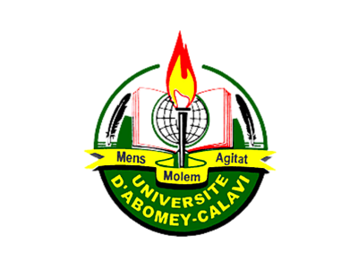

Université d'Abomey-Calavi
**************
Ecole Natonale d'Economie Appliquée et de Management

I- Cursus
1-Primaire:
Notre Patrimoine Commun (située à Aidjedo en face de la mosquée près du marché)
2-Secondaire:
BEPC: La Colombe (située à St Rita)
BAC: Les Cours Gama (située dans la von en face de l'Eneam)
II-Description
Je m'appelle NASCIMENTO Zachario , j'ai eu le BAC D en 2023. J'ai choisi la filière informatique par passion pour la programmation ainsi qu'en raison de mes capacités.
Qui plus-est l'informatique est devient omniprésente est indispensable dans la société.L'entrepreunariat nécessitant d'avoir plusieurs cordes à son arc; je pense
que trouver l'informatique est un domaine qui ne manque pas Je suis attentif au cours pour peu que le cours soit interressant.